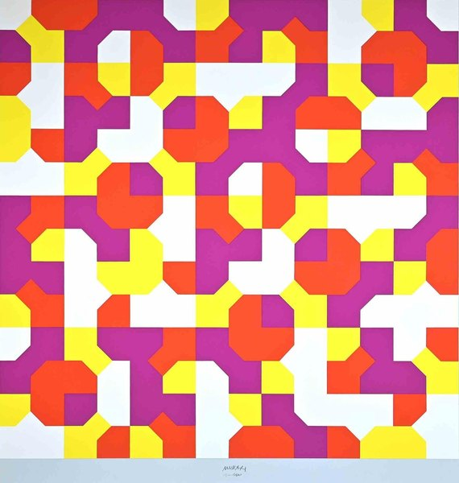
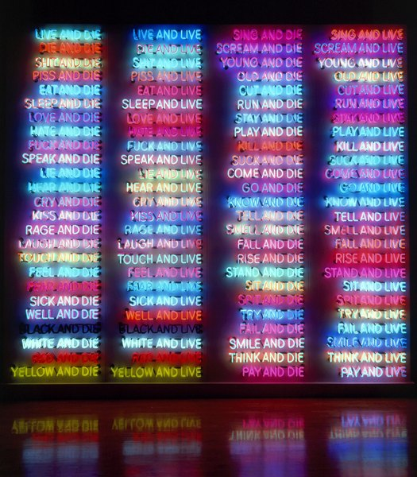
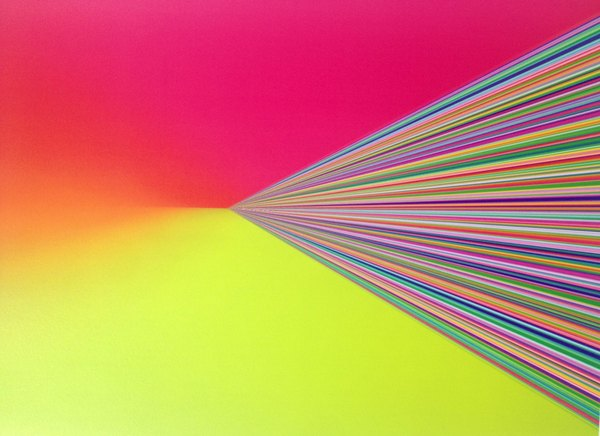
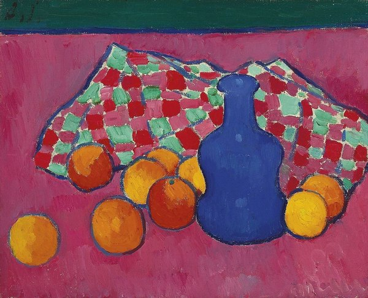
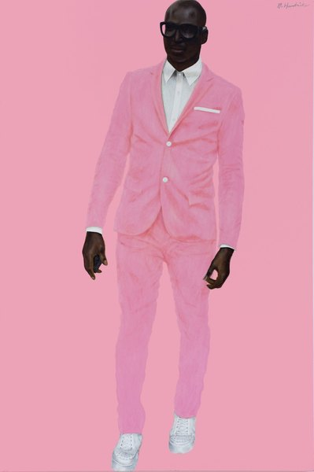
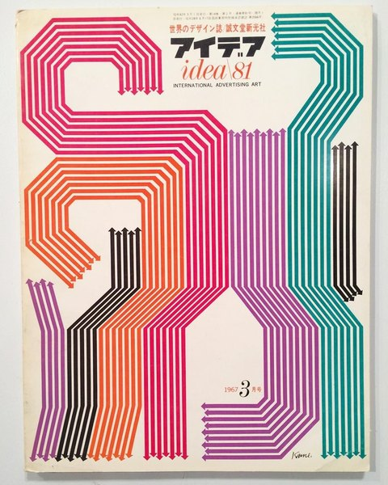
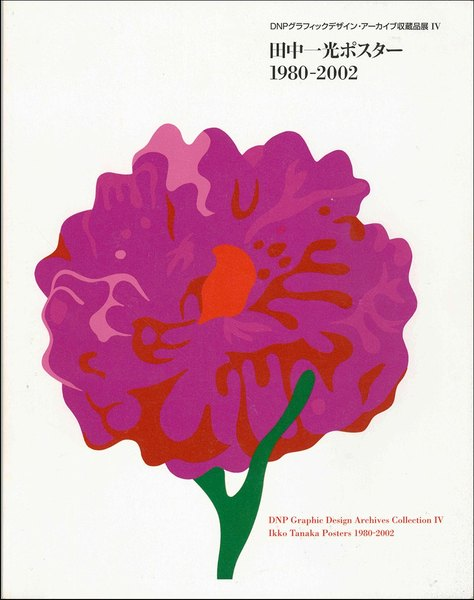

CRVI002657Seiichi Hayashi - Untitled (woman with a lamp and bottles)

CRVI002247Mark Rothko - Untitled

CRVI001825Victor Vasarely - Keiho-C1
1963
1963

CRVI000853Richard Turley - [MTV ident — Zen Jen]
MTV ident · animated
MTV ident · animated

CRVI002616Tito Puente - The Latin World of Tito Puente / El Mundo Latino de Tito Puente
1964
1964

CRVI000123Shigeo Fukuda - Jazz Festival Montreux
19e Festival de Jazz Montreux, 5–20 juillet 1985 · 100 x 70 cm · 1985
19e Festival de Jazz Montreux, 5–20 juillet 1985 · 100 x 70 cm · 1985

CRVI001332Barney Bubbles - Vinyl
Designed by Barney Bubbles
Designed by Barney Bubbles

CRVI000473Unknown - Pikettymania
Bloomberg Businessweek, June 2 – June 8, 2014 · 2014
Bloomberg Businessweek, June 2 – June 8, 2014 · 2014

CRVI000852Richard Turley - No Chill
MTV
MTV

CRVI001304Horace Parlan - Headin' South
Photograph by Ronnie Brathwaite · Blue Note 4062 · 1960
Photograph by Ronnie Brathwaite · Blue Note 4062 · 1960

CRVI000478Tim O'Brien - American Oligarchy
Mother Jones, January + February 2024 · 2024
Mother Jones, January + February 2024 · 2024

CRVI002084Unidentified - Light installation, gallery view

CRVI001074Kim Laughton - Untitled

CRVI000075H. Tical - Impact Synthesized Sound And Music
Designer unknown · Vedette Records · 1971
Designer unknown · Vedette Records · 1971
CRVI002720Takenobu Igarashi - AIGA Detroit presents Takenobu Igarashi and his Architectural Alphabet

CRVI002361Amy Sherald - Trans Forming Liberty
2024
2024

CRVI001076Kim Laughton - Untitled

CRVI000579Alvin Lustig - A Streetcar Named Desire
Tennessee Williams · New Directions · 1947
Tennessee Williams · New Directions · 1947

CRVI000860Julian Stanczak - Connecting
145 × 145 cm · 1967
145 × 145 cm · 1967

CRVI002421Bruno Munari - Peano Curves
1991
1991

CRVI000741Robert Beatty - Untitled
Album cover · artist and title unrecorded · Trendland plate 12
Album cover · artist and title unrecorded · Trendland plate 12

CRVI000466Unknown - XXX
Bloomberg Businessweek, June 25 – July 1, 2012 · 2012
Bloomberg Businessweek, June 25 – July 1, 2012 · 2012

CRVI000119Tadanori Yokoo - Koshimaki-Osen
腰巻お仙 · theatre poster for Kara Juro's Jokyo Gekijo (Situation Theatre) · silkscreen · 1966
腰巻お仙 · theatre poster for Kara Juro's Jokyo Gekijo (Situation Theatre) · silkscreen · 1966

CRVI002521Josef Müller-Brockmann - Opernhaus Zürich: Die schalkhafte Witwe
1971
1971

CRVI002393Bruce Nauman - One Hundred Live and Die
1984
1984

CRVI001330Roland Kayn - Cybernetics III
Maker unidentified · Deutsche Grammophon
Maker unidentified · Deutsche Grammophon

CRVI000519Unknown - Al Is Coming for the Classroom.
MIT Technology Review
MIT Technology Review

CRVI000483Bobby Doherty - Why Pants Are Blowing Up
The New York Times Magazine, March 3, 2024 · 2024
The New York Times Magazine, March 3, 2024 · 2024

CRVI000836Ottagono - Ottagono 72
marzo 1984 · anno 19 · 1984
marzo 1984 · anno 19 · 1984

CRVI002706Mitsuo Katsui - Untitled (spectrum rays)

CRVI002785Bob Peak - My Fair Lady
1964
1964

CRVI001281Tommy Flanagan, John Coltrane, Kenny Burrell, Idrees Sulieman - The Cats
Designer unrecorded · New Jazz 8217 · 1959
Designer unrecorded · New Jazz 8217 · 1959

CRVI001712Alexej von Jawlensky - Blaue Vase mit Orangen
1908
1908

CRVI002761Barkley L. Hendricks - Photo Bloke
2016
2016

CRVI000497Maili Holiman - TikTok's Evolution of Digital Blackface
WIRED, September 2020 · 2020
WIRED, September 2020 · 2020

CRVI000291The Isley Brothers - Shout!
Designer unknown · RCA · 1959
Designer unknown · RCA · 1959

CRVI000406Tin Man - Neo Neo Acid
Designer unknown · Absurd Recordings · 2012
Designer unknown · Absurd Recordings · 2012

CRVI001869Dan Flavin - Untitled (to Don Judd, Colorist) 1–5
1987
1987

CRVI001188Eric Dolphy - Iron Man
Painting by Mati Klarwein, photograph by Don Schlitten · Douglas KZ 30873 · 1971
Painting by Mati Klarwein, photograph by Don Schlitten · Douglas KZ 30873 · 1971

CRVI000724Forma - Physicalist
Designed by Robert Beatty
Designed by Robert Beatty

CRVI002666Yusaku Kamekura - アイデア / idea No. 81
1967
1967

CRVI000215Youngblood Brass Band - Pax Volumi
Illustration by Timothy J. Reynolds · Tru Thoughts · 2013
Illustration by Timothy J. Reynolds · Tru Thoughts · 2013

CRVI000340Wilson Pickett - The Exciting Wilson Pickett
Designer unknown · Atlantic · 1966
Designer unknown · Atlantic · 1966

CRVI001081Kim Laughton - Untitled

CRVI002323Ed Ruscha - Honk

CRVI002504Milton Glaser - Kandinsky
1984
1984

CRVI000430Teenage Fanclub - Bandwagonesque
Designer unknown · Creation · 1991
Designer unknown · Creation · 1991

CRVI001269Grachan Moncur III - Evolution
Designed by Reid Miles, photograph by Francis Wolff · Blue Note 4153 · 1964
Designed by Reid Miles, photograph by Francis Wolff · Blue Note 4153 · 1964

CRVI001161Kenny Dorham - Trompeta Toccata
Designed by Reid Miles, photograph by Francis Wolff · Blue Note BLP 4181 · 1965
Designed by Reid Miles, photograph by Francis Wolff · Blue Note BLP 4181 · 1965

CRVI001362Andrew Kuo - Charting Traxman
Chart for The New York Times · 2012-06-18 · 2012
Chart for The New York Times · 2012-06-18 · 2012

CRVI002686Makoto Nakamura - おんなのドラマは指先から始まる (The Drama of a Woman Begins at the Fingertips)
1978
1978

CRVI002612The Go-Go's - Vacation
1982
1982

CRVI002672Unattributed - DNPグラフィックデザイン・アーカイブ収蔵品展 IV: 田中一光ポスター 1980–2002
2012
2012